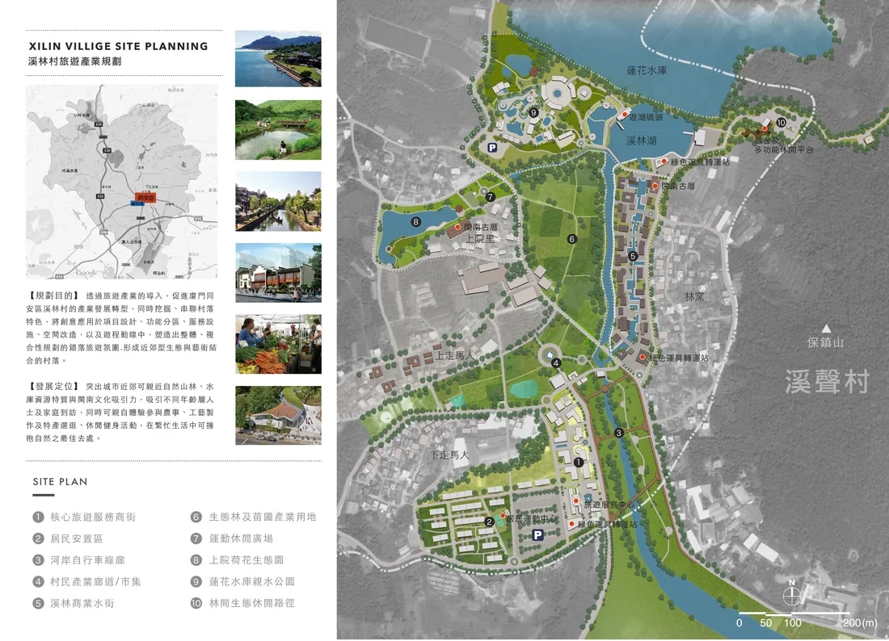
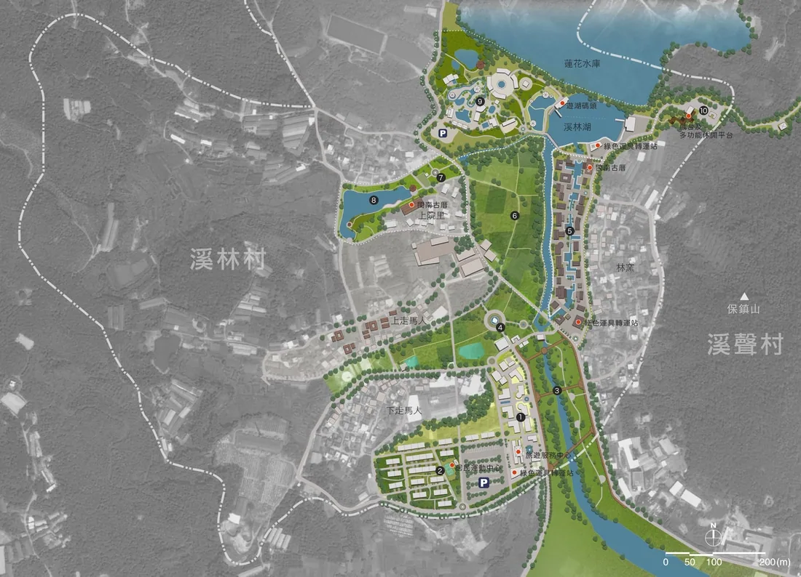

溪林村旅遊產業規劃
XILIN VILLAGE SITE PLANNING
規劃目的 /
透過旅遊產業的導入，促進廈門同安區溪林村的產業發展轉型，同時挖掘、串聯村落特色，將創意應用於項目設計、功能分區、服務設施、空間改造，以及遊程動線中，塑造出整體、複合性規劃的錯落旅遊氛圍,形成近郊型生態與藝術結合的村落。
本基地的發展定位 /
突出城市近郊可親近自然山林、水庫資源特質與閩南文化吸引力，吸引不同年齡層人士及家庭到訪，同時可親自體驗參與農事、工藝製作及特產選逛、休閒健身活動，在繁忙生活中可擁抱自然之最佳去處。




Layout -Olga Yang